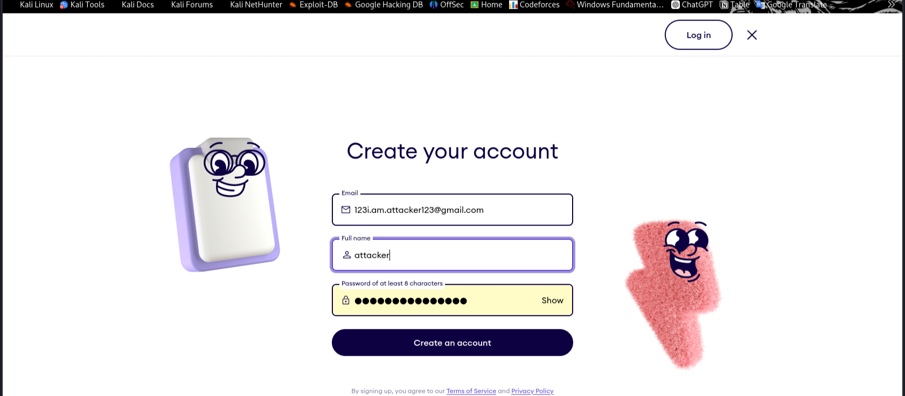
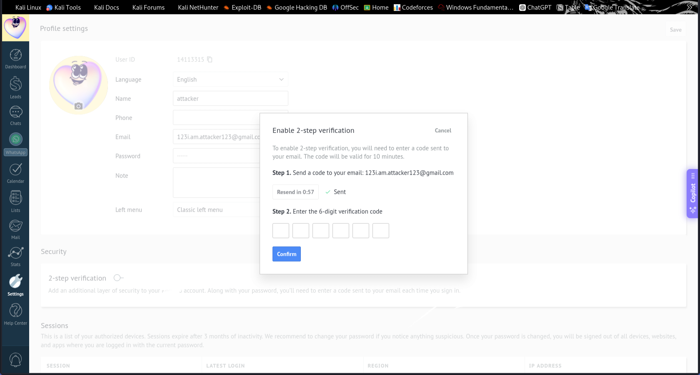
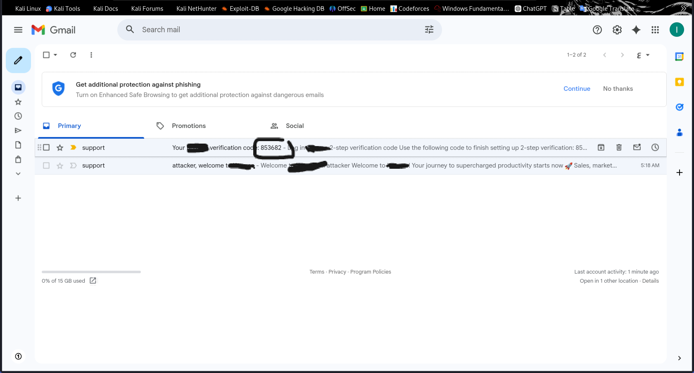
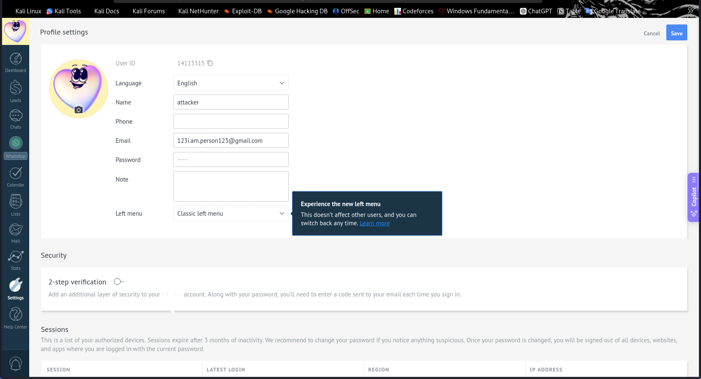
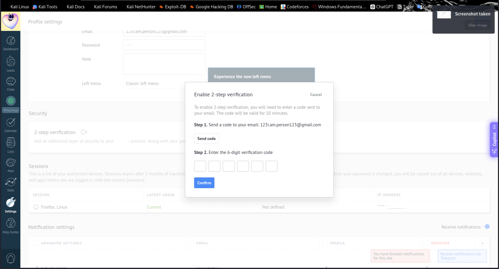
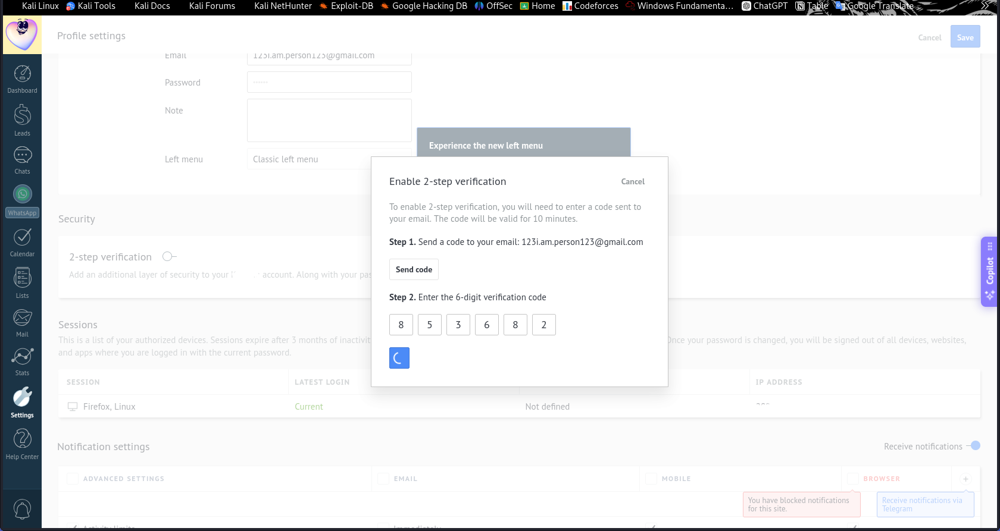
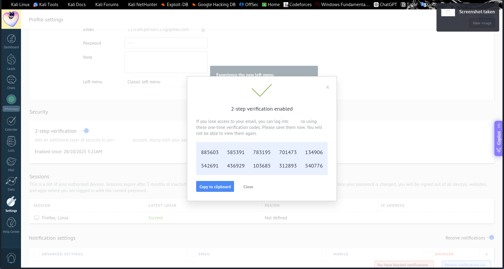
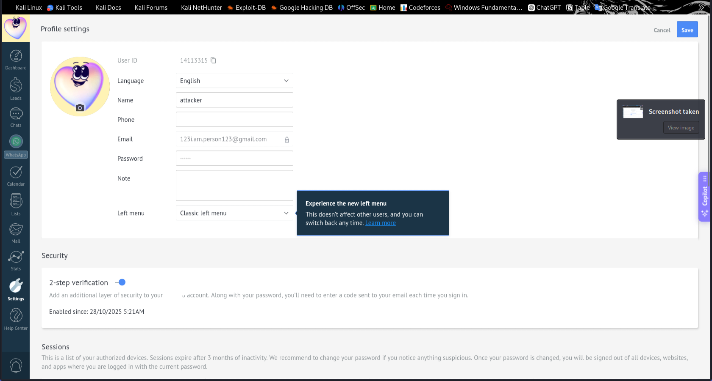

Pre-Account Takeover via 2FA Logic Flaw on Example.com
October 29, 2025
Summary
While testing Example.com's authentication mechanisms, I discovered a critical pre-account takeover vulnerability caused by a logic flaw in the two-factor authentication (2FA) activation process. The vulnerability allows an attacker to activate 2FA using a verification code that was issued to a previously linked email address, even after the account's email has been changed.
The root cause is that previously issued 2FA verification codes are not properly invalidated or bound to the current email/session, allowing reuse of stale codes and enabling a pre-account takeover scenario.
Vulnerability Details
Severity: High
Vulnerability Type: Pre-Account Takeover / Logic Flaw
Affected Component: 2FA Activation & Email Change Flow
CVSS Score: 7.5 (High)
Technical Analysis
The vulnerability exists due to improper validation of 2FA verification tokens during the email change process. When a user changes their account email, the system fails to:
- Invalidate previously issued 2FA verification codes
- Bind verification tokens to the specific target email address
- Verify that the token being used was issued for the current account state
- Enforce single-use, time-limited tokens with proper state management
Step-by-Step Reproduction
Here's how I discovered and verified this vulnerability:
Step 1: Account Registration
I registered a new account using an attacker-controlled email address: attacker@example.com
Note: During testing, no email verification was required during sign-up, which further compounds the security risk.
📷 [Screenshot: Account registration page with attacker email]
Step 2: Initiate 2FA Activation
I began the process to enable 2FA on the account. The system sent a 2FA activation code to attacker@example.com.
2FA Activation Code: XXXXXX
Sent to: attacker@example.com
Valid for: 10 minutes📷 [Screenshot: 2FA setup page showing code sent to attacker email]
📷 [Screenshot:code sent to attacker email]
Step 3: Change Account Email
Without completing the 2FA setup, I navigated to account settings and changed the account email to a victim-controlled address: victim@example.com
At this point, the legitimate user (victim) now controls the account's primary email address.
📷 [Screenshot: Email change confirmation showing new email]
Step 4: Request New 2FA Code
I requested to enable 2FA again. The system displayed a message indicating it would send a new code to victim@example.com (the new email address).
📷 [Screenshot: 2FA request showing new email as destination]
Step 5: Exploit - Reuse Old Verification Code
Here's where the vulnerability manifests. Instead of using the code sent to the new email (victim@example.com), I reused the original code that was sent to attacker@example.com (the old email).
Result: The system accepted the old code and successfully activated 2FA for the account, even though that code was issued to a different email address!
📷 [Screenshot: Reuse Old Verification Code]
📷 [Screenshot: Successfully activated 2FA using old code]
📷 [Screenshot: Successfully activated 2FA using old code]
Proof of Concept Request
Here's the technical request that demonstrates the vulnerability:
POST /api/account/enable-2fa
Host: example.com
Content-Type: application/json
{
"verification_code": "XXXXXX", // Old code from attacker@example.com
"email": "victim@example.com" // Current email (victim)
}
Response:
{
"status": "success",
"message": "2FA has been successfully enabled",
"2fa_enabled": true
}Impact Assessment
This vulnerability has severe security implications:
🔴 Direct Impacts:
- Pre-Account Takeover: An attacker can maintain control over account authentication mechanisms even after the legitimate user changes the email
- 2FA Hijacking: Attacker can link 2FA to their own device/email, potentially locking out the legitimate user
- Persistent Access: Even if the victim changes their password, the attacker-controlled 2FA may allow bypass
- Account Lockout: Legitimate users may be unable to access their accounts if 2FA is controlled by an attacker
⚠️ Attack Scenarios:
- Typosquatting Attack: Register account with similar email (victim+typo@example.com), enable partial 2FA, wait for victim to claim account
- Takeover Chain: Use this as part of a larger account takeover chain when combined with other vulnerabilities
- Social Engineering: Trick users into signing up with attacker-controlled email, then "help" them change to their real email
Root Cause Analysis
The vulnerability stems from insufficient server-side validation:
// Vulnerable Code (Conceptual)
function enable2FA(code, userId) {
// ❌ VULNERABLE: Only checks if code exists and is valid
if (isValidCode(code)) {
enableTwoFactor(userId);
return { success: true };
}
// Missing checks:
// - Was this code issued for the CURRENT email?
// - Has the email changed since code issuance?
// - Is the code already used?
// - Is the code expired?
}Secure Implementation:
// ✅ SECURE: Proper validation
function enable2FA(code, userId) {
const user = getUser(userId);
const codeData = getCodeData(code);
// Verify code was issued for current email
if (codeData.email !== user.currentEmail) {
throw new Error('Invalid code for current email');
}
// Verify code hasn't been used
if (codeData.used) {
throw new Error('Code already used');
}
// Verify code isn't expired
if (codeData.expiresAt < Date.now()) {
throw new Error('Code expired');
}
// Mark code as used
markCodeAsUsed(code);
enableTwoFactor(userId);
return { success: true };
}Recommended Fixes
To properly remediate this vulnerability, I recommend implementing the following security controls:
1. Invalidate Tokens on Email Change
// Invalidate ALL tokens when email changes
function changeEmail(userId, newEmail) {
invalidateAllTokens(userId);
updateUserEmail(userId, newEmail);
sendVerificationEmail(newEmail);
}2. Bind Tokens to Email Address
// Store token with associated email
{
"token": "XXXXXX",
"userId": "12345",
"email": "user@example.com", // Current email when issued
"type": "2fa_activation",
"createdAt": "2025-10-29T10:00:00Z",
"expiresAt": "2025-10-29T10:10:00Z",
"used": false
}3. Require Email Verification
Before allowing 2FA activation on a newly changed email, require the user to verify ownership of that email address.
4. Implement Token State Management
- Single-use tokens that are marked as used immediately
- Time-limited validity (5-10 minutes recommended)
- Rate limiting on token generation and validation attempts
- Audit logging for all token operations
5. Add Server-Side Context Validation
// Validate complete context
function validateToken(token, userId, currentEmail) {
const tokenData = getToken(token);
return (
tokenData.userId === userId &&
tokenData.email === currentEmail &&
!tokenData.used &&
tokenData.expiresAt > Date.now()
);
}Timeline
- October 28, 2025: Vulnerability discovered and verified
- October 28, 2025: Reported to security team via responsible disclosure
- October 29, 2025: Acknowledgment received from security team
- Status: Under investigation by vendor
Lessons Learned
This vulnerability highlights several important security principles:
- State Management Matters: Authentication tokens must be tightly coupled with the current state of the account
- Email Changes Are Critical: Email changes should be treated as high-risk operations that trigger security resets
- Don't Trust Client Input: Always validate on the server that the token matches the current account context
- Defense in Depth: Multiple layers of validation help prevent logic flaws from becoming exploitable
Testing Methodology
This vulnerability was discovered through:
- Manual security testing of authentication flows
- Analysis of email change and 2FA activation sequences
- Testing edge cases and race conditions in token validation
- No automated tools were used - purely manual testing
- Testing was conducted ethically with no harm to user data
Conclusion
This pre-account takeover vulnerability demonstrates the importance of proper state management in authentication systems. By failing to invalidate or properly bind verification tokens to the current account state, the application allows attackers to maintain control over security features even after legitimate users make changes.
The vulnerability has been responsibly disclosed and is being addressed by the security team. This writeup serves as a learning resource for the security community on the importance of comprehensive token validation.
⚠️ Responsible Disclosure
This vulnerability was discovered and reported following responsible disclosure practices. No user data was accessed or modified beyond what was necessary for proof-of-concept. Testing stopped immediately after verification. This writeup is published with the vendor's knowledge.
References & Further Reading
- OWASP: Session Fixation
- PortSwigger: Authentication Vulnerabilities
- OWASP: Multi-Factor Authentication Cheat Sheet
Stay tuned for more security research and bug bounty writeups. Follow me on Twitter and GitHub for updates!